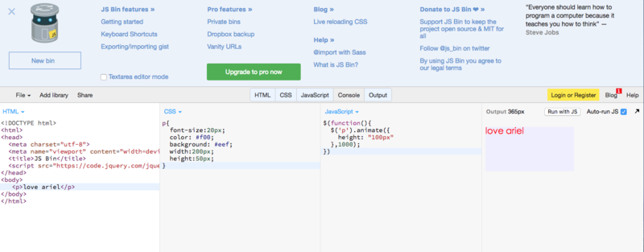
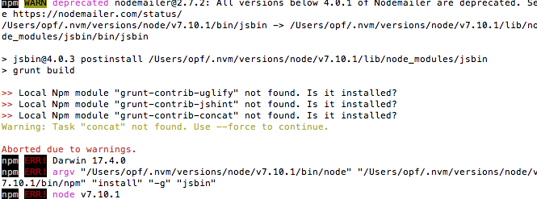
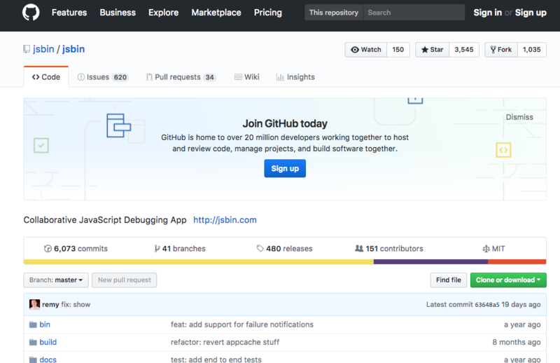
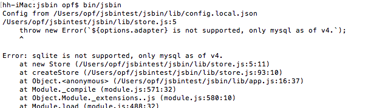
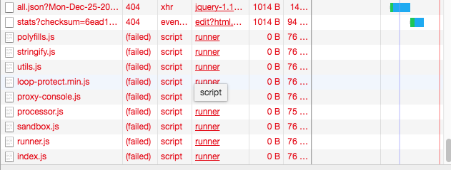

jsbin 4.1版本的本地搭建

jsbin是一种开放源码的协同Web开发调试工具（http://jsbin.com/?html,output）。其优点是可以快速的提供前端需要的各种开发环境，快速地编辑代码，并实时显示页面最终的效果。

其实类似的在线代码运行工具有很多，比较有名的有codepen、runjs、codeanywhere等等。但jsbin的一个显著特点是开源。开发者们可以在自己的爱机上搭建一套自己的运行环境。这个应该是众多前端程序员儿时的梦想吧，amosworker（本人）也一样。
虽然在github上有开源的代码可以直接拷贝，也有说明文档，但搭建的过程并不是特别风顺的。在解决了遇到的所有问题后，amosworker想在此和大家分享一下搭建的方法，希望对大家有用。
Git clone
首先需要从 https://github.com/jsbin/jsbin 下载到源码。也可以用npm来直接安装源代码，但本人试了几次都不能成功。

于是采用了git clone的方法直接将代码拉取到本地。
1 | git clone https://github.com/jsbin/jsbin.git |

安装
拉取完成后，运行
1 | cd jsbin |
进行安装。（在此需要注意一下，node的版本需要为7.x）
如果遇到npm安装不成功，作者建议用yarn来安装。
1 | yarn insall |
安装成功后迫不及待的运行
1 | bin/jsbin |
发现直接报错

通过报错信息可知是数据库没有配置。在此amosworker选择了mysql数据库，并安装了mysql workerbench方便操作数据库。将config.default.json复制一份保存为config.local.json， 修改
config.local.json文件中的数据库配置。
1 | { |
接下来就是要创建jsbin的数据库了。
先建立数据库
1 | create database jsbin; |
在build文件夹中找到一个full-db-v3.mysql.sql的文件，复制里面的sql语句，在workerbench里执行。然后启动数据库。运行bin/json 命令就可以启动jsbin的服务了。
注册本地用户
随意输入用户名、邮箱和密码就可以完成注册，不用进行邮箱确认

有了用户名我们就可以保存我们的劳动成果了O(∩_∩)O哈哈~
解决output无法运行的问题
在html中输入代码后，发现在右侧的output，没有任何反应。打开控制台后，发现output里有一连串的404报错。

究其原因是因为output的iframe中加载的js等静态资源是https协议的。但jsbin现在提供的是http的服务，所以得把路径都改成以http开头。在lib/routes.js文件中 将 static: sandbox.helpers.urlForStatic(undefined, true) 里的true改成false。
1 | app.get('/runner', function(req, res) { |
另外，还会有一个路径是“*/blog/all.json” 的404报错，我们可以建一个public/blog/all.json的空文件来解决，或者将public/js/chrome/welcome-panel.js里的关于all.json的ajax请求注释掉。
到这里，本地的jsbin终于可以正常运行了。O(∩_∩)O哈哈~
今天是圣诞节，祝大家圣诞快乐！ Merry Christmas！🎄